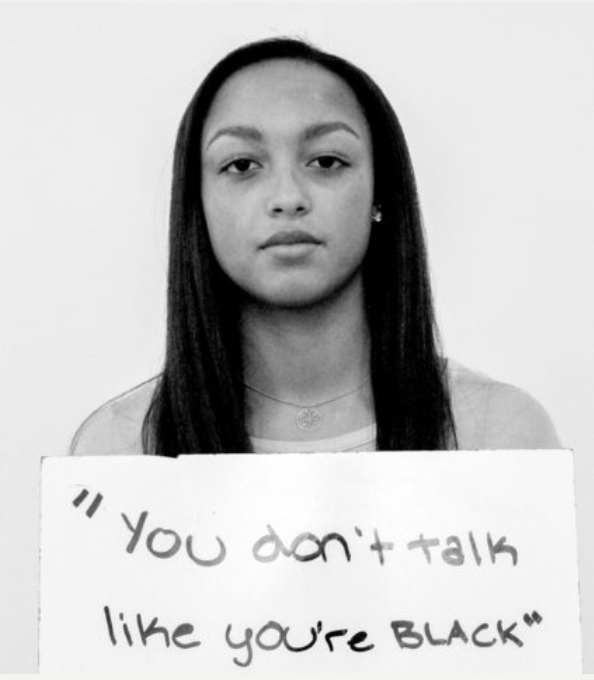

"Ascription of Intelligence"

- Assigning intelligence to a person of color on the basis of their race. “You are a credit to your race.” - It is unusual for someone of your race to be intelligent.
- “You are so articulate.”- People of color are generally not as intelligent as Whites.
- Asking an Asian person to help with a Math or Science problem. - All Asians are intelligent and good in Math / Sciences.
"Invalidating Mental health"
- “That’s insane” or “That’s crazy,” using terminology related to a mental health condition to describe surprise or astonishment.
- “You don’t seem like you are depressed. Sometimes I get sad too,” minimizing the experiences of people with mental illness.
"Gender decrimination"
- Telling someone to be more ladylike.
- Judging someone for not fitting into stereotypes of femininity, such as by being caring or submissive.
- Making inappropriate comments about someone's appearance.
- Talking down to someone based on assumptions about their gender.- "you are probably not good at math becuase you are woman."
- An advisor asks a female student if she is planning on having children while in postdoctoral training. - Women should be married during child-bearing ages because that is their primary purpose.
"Sexuality"
- Use of the pronoun “he” to refer to all people.
Being constantly reminded by a coworker that “we
are only women.”
Being forced to choose Male or Female when completing basic forms.
Two options for relationship status: married or single.
A heterosexual man who often hangs out with his female friends more than his male friends is labeled as gay.